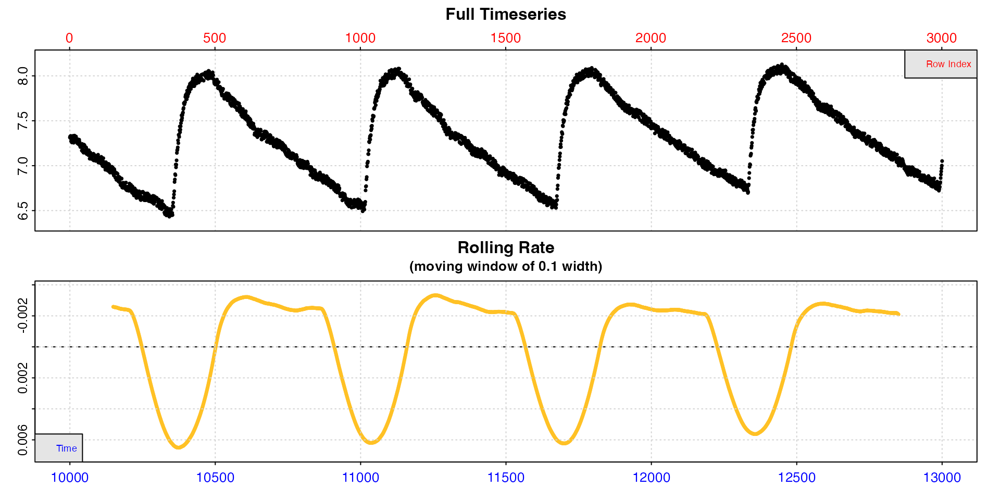

subset_data: Subset data by time, row, or oxygen ranges
Source:vignettes/subset_data.Rmd
subset_data.RmdThe purpose of this vignette is to highlight the
subset_data() function, an extremely useful utility
function in respR.
Overview
When working with a large respirometry dataset, sometimes you don’t want to use all of it within another function. There can be a several reasons for this. Maybe it is an intermittent-flow dataset and you want to extract a single replicate, maybe you want to remove extraneous data at the start or end of a dataset, or maybe you just want to plot or inspect a small portion of a dataset for a quick look.
subset_data can let you pass subsets of data to other
functions by ranges of time, row, or oxygen. This works not only on data
frames, but also respR inspect() and
inspect.ft() objects. Originally if you wanted to subset
these you would have to subset the original data then
inspect it again, potentially creating a new object. Using
subset_data removes these steps.
It is especially useful when used with piping, either the new native
|> pipes introduced in R
v4.1 or %>% dplyr pipes, for
passing portions of a dataset without having to create a new object.
R makes it fairly easy to subset data objects, but this function has several advantages, in that it lets you subset the data easily using the units you are already thinking about, reduces the proliferation of extra objects in the local environment that you need to keep track of, and can be used in loops to subset regions of longer datasets in a consistent way.
Subset by time
The squid.rd dataset is extremely long.
inspect(squid.rd)
#> inspect: Applying column default of 'time = 1'
#> inspect: Applying column default of 'oxygen = 2'
#> inspect: No issues detected while inspecting data frame.
Let’s say we are only interested in the initial stages.
x <- subset_data(squid.rd, from = 1, to = 10000, by = "time")
inspect(x)
Now we can pass this object to further functions.
Subset by row
We can do the same thing using rows, which in this dataset which is per-second happen to be the same values.
x <- subset_data(squid.rd, from = 1, to = 10000, by = "row")
inspect(x)Subset by oxygen
Let’s say we are only interested in routine metabolic rates in normal conditions. In this long experiment oxygen declines to very low levels, so let’s only select the higher values.
x <- subset_data(squid.rd, from = 8, to = 6.5, by = "oxygen")
inspect(x)
print(x)
#> Time Oxygen
#> <int> <num>
#> 1: 0 7.7264
#> 2: 1 7.7264
#> 3: 2 7.7264
#> 4: 3 7.7264
#> 5: 4 7.7264
#> ---
#> 3941: 3940 6.5035
#> 3942: 3941 6.4954
#> 3943: 3942 6.4954
#> 3944: 3943 6.5035
#> 3945: 3944 6.5035Note how even though we use a value well above what is in the dataset (8.0) the function simply subsets from the start of the data, Similarly, there is no exact match to the value of 6.5, so the function finds the closest value, in this case 6.5035.
Piping
This is perhaps where subset_data comes into its own. We
want to subset a single replicate from an intermittent flow experiment
to calculate a rate.
x <- inspect(intermittent.rd)
We have already inspected the dataset. Now we just subset out one
replicate, pipe the data to calc_rate and other functions
and output our final rate, all without having to create a new
object.
x |>
subset_data(from = 2100, to = 3500, by = "time") |>
auto_rate() |>
adjust_rate(by = -0.00071) |>
convert_rate(oxy.unit = "mg/L",
time.unit = "s",
output.unit = "mg/h/g",
volume = 2.379,
mass = 0.006955) |>
summary(pos = 1:3)#>
#> # summary.convert_rate # ----------------
#> Summary of converted rates from entered 'pos' rank(s):
#>
#> rep rank intercept_b0 slope_b1 rsq density row endrow time endtime oxy endoxy rate adjustment rate.adjusted rate.input oxy.unit time.unit volume mass area S t P rate.abs rate.m.spec rate.a.spec output.unit rate.output
#> 1: NA 1 8.52 -0.000608 0.993 8645 162 1262 2261 3361 7.14 6.52 -0.000608 -0.00071 0.0001022 0.0001022 mg/L sec 2.38 0.00696 NA NA NA NA 0.876 0.126 NA mgO2/hr/g 0.126
#> 2: NA 2 8.47 -0.000586 0.972 8411 72 670 2171 2769 7.19 6.85 -0.000586 -0.00071 0.0001235 0.0001235 mg/L sec 2.38 0.00696 NA NA NA NA 1.058 0.152 NA mgO2/hr/g 0.152
#> 3: NA 3 8.55 -0.000619 0.989 7819 162 1033 2261 3132 7.14 6.63 -0.000619 -0.00071 0.0000912 0.0000912 mg/L sec 2.38 0.00696 NA NA NA NA 0.781 0.112 NA mgO2/hr/g 0.112
#> -----------------------------------------We can also use subset_data and pipes just to have a
quick look at portions of big datasets without having to save
anything.
zeb_intermittent.rd |>
subset_data(from = 10000, to = 13000, by = "time") |>
inspect()
Subset multiple columns:
subset_data will also work on multi-column data frames
(in the case of by = "oxygen" it bases the subsetting on
the first column of oxygen only, but all other columns are subset to the
same rows).
urchins.rd |>
subset_data(from = 10, to = 20, by = "time") |>
print(nrows = 10)
#> time.min a b c d e f g h i j k l m n o p b1 b2
#> <num> <num> <num> <num> <num> <num> <num> <num> <num> <num> <num> <num> <num> <num> <num> <num> <num> <num> <num>
#> 1: 10.0 7.58 7.45 7.51 7.36 7.65 7.43 7.51 7.46 7.80 7.46 7.50 7.54 7.61 7.43 6.79 6.89 7.90 7.67
#> 2: 10.2 7.54 7.42 7.48 7.36 7.66 7.47 7.50 7.45 7.80 7.49 7.48 7.59 7.61 7.40 6.81 6.89 7.88 7.65
#> 3: 10.3 7.52 7.46 7.51 7.34 7.65 7.46 7.52 7.41 7.79 7.49 7.46 7.54 7.60 7.36 6.80 6.89 7.88 7.66
#> 4: 10.5 7.53 7.43 7.50 7.38 7.61 7.45 7.47 7.42 7.75 7.48 7.44 7.54 7.61 7.40 6.81 6.85 7.87 7.66
#> 5: 10.7 7.52 7.43 7.50 7.34 7.61 7.42 7.46 7.44 7.74 7.46 7.46 7.49 7.58 7.39 6.78 6.88 7.87 7.67
#> ---
#> 57: 19.3 7.25 7.24 7.40 7.12 7.48 7.29 7.32 7.32 7.60 7.30 7.32 7.37 7.43 7.22 6.70 6.78 7.92 7.64
#> 58: 19.5 7.27 7.23 7.42 7.14 7.45 7.30 7.31 7.33 7.60 7.26 7.30 7.37 7.40 7.20 6.73 6.76 7.90 7.64
#> 59: 19.7 7.27 7.24 7.41 7.13 7.45 7.30 7.28 7.29 7.61 7.24 7.30 7.37 7.38 7.20 6.71 6.76 7.89 7.65
#> 60: 19.8 7.27 7.23 7.40 7.16 7.43 7.27 7.36 7.32 7.63 7.25 7.31 7.37 7.36 7.18 6.69 6.76 7.89 7.66
#> 61: 20.0 7.31 7.20 7.41 7.11 7.45 7.24 7.33 7.37 7.63 7.26 7.30 7.36 7.41 7.19 6.70 6.75 7.89 7.65